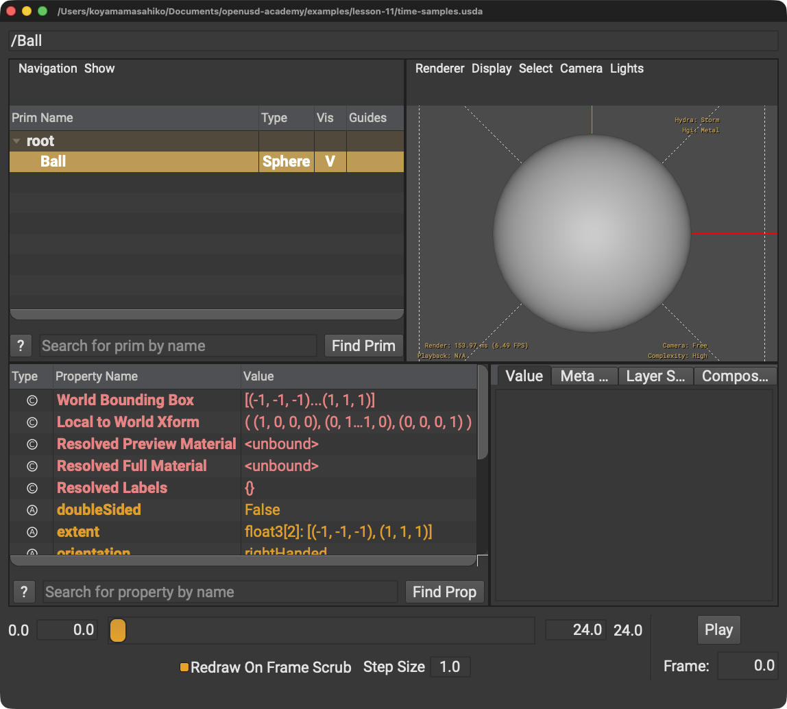

Pythonの引数を逆にする
原因: USDAの時点: 値とPythonのSet(値, 時点)は順が違います。
解決策: 対応表で確認します。
STEP 30 · AUTHORING
時点と値の組で変化を記述します
今日これだけ
公式情報に基づく説明
Time Codeは単位を持たない時間上の位置です。Time SampleはTime CodeとAttribute値の組です。StageのtimeCodesPerSecondがTime Codeを秒へ対応させます。
USDA
#usda 1.0
(
startTimeCode = 0
endTimeCode = 24
timeCodesPerSecond = 24
)
def Sphere "Ball"
{
double radius.timeSamples = {
0: 1,
24: 2,
}
}先頭の丸括弧はLayer Metadataです。0: 1はTime Code 0に値1、カンマは項目の区切りです。波括弧内に時点と値の組を書きます。

radius = 1のSphereを表示しています。Diagram
Python
from pxr import Usd, UsdGeom
stage = Usd.Stage.CreateNew("time-samples.usda")
stage.SetStartTimeCode(0)
stage.SetEndTimeCode(24)
stage.SetTimeCodesPerSecond(24)
ball = UsdGeom.Sphere.Define(stage, "/Ball")
radius = ball.GetRadiusAttr()
radius.Set(1, Usd.TimeCode(0))
radius.Set(2, Usd.TimeCode(24))
stage.Save()Setの最初の引数が値、次がTime Codeです。丸括弧は入力、カンマは値と時点の区切りです。
USDA → Python mapping
USDA
startTimeCode = 0↓Python
stage.SetStartTimeCode(0)USDA
0: 1↓Python
radius.Set(1, Usd.TimeCode(0))Beginner notes
公式: startTimeCodeとendTimeCodeはStageを最初に再生する時間範囲を示します。この範囲外へのTime Sampleの記述や値の評価を禁止する境界ではありません。補間可能な数値型は、通常、二つのTime Sampleの間を線形補間します。
よくある間違い
原因: USDAの時点: 値とPythonのSet(値, 時点)は順が違います。
解決策: 対応表で確認します。
原因: Metadataは時間サンプルを持ちません。
解決策: Attributeへ設定します。
Glossary
Official references
確認日: